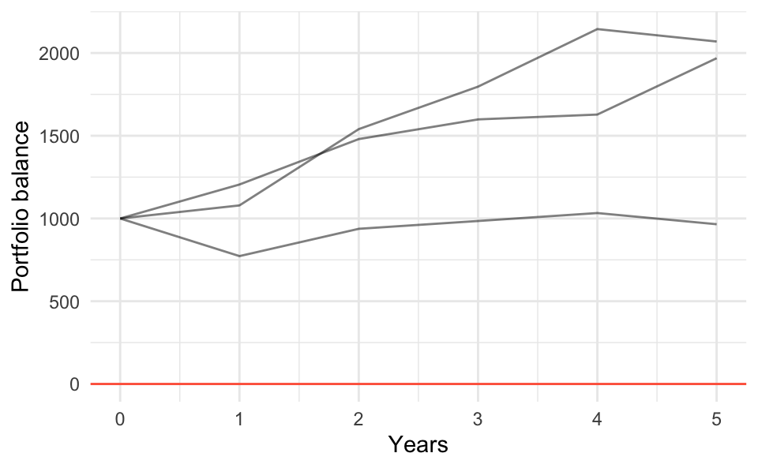
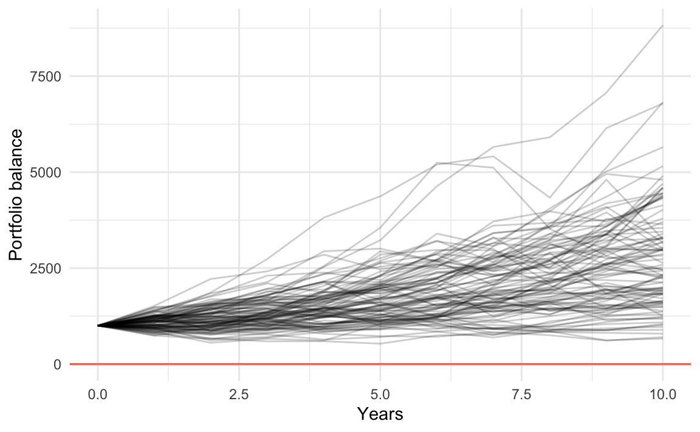
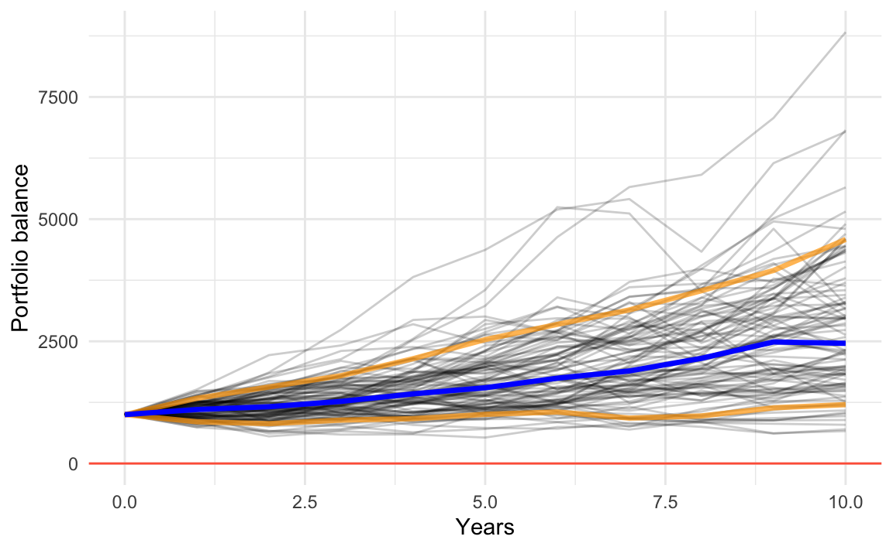

19 Simulations
In this chapter we are going to write code to simulate investing a lump-sum
in the stock market. We will use some functions from the collection of
"tidyverse" packages.
# required package
library(tidyverse)19.1 Motivation
We are going to consider investing in a total stock market index fund which is a financial instrument that tracks the performance of the U.S. stock market. This type of instrument typically takes the form of a mutual fund or an exchange-traded fund (ETF) that invests in a basket of stocks that passively tracks the performance of the U.S. stock market.
19.1.1 Investing a Lump-sum
Say you are going to start your investment with a lump-sum of $1000 in a U.S. total stock market index fund. In theory, this is money that you don’t plan to use within the next 5 years, and you are willing to invest it for the long run (10 years or more). How much money would you expect to get at the end of a 10-year period? Or after 15 years? Or after 20 years? Or after a longer period?
19.1.2 Example with Future Value
Suppose you want to invest $1000 in a financial product (e.g. Money Market, Certificate of Deposit, Mutual Fund, ETF) that has a hypothetical annual return rate of 5%. Assume that you will keep this investment for 10 years. How much money would you expect to get at the end of this period?
To answer this question, you can use the Future Value formula, assuming compound interest.
Here are the ingredients for the Future Value formula:
- \(C_0\) = cash flow at period 0 (i.e. how much you invest)
- \(r\) = rate of return (in a given period)
- \(n\) = number of periods
- \(\text{FV}\) = future value (i.e. what you’ll get)
\[ \text{FV} = C_0 (1 + r)^n \]
One of the critical ingredients to calculate the future of your investment is the annual rate of return \(r\). The issue is that annual rates of return when investing in the stock market fluctuate every year—because the market is volatile. Consequently, the exact answer to the above question is impossible to know.
However, we are going to make some assumptions, and run some simulations to get an idea of the behavior for this type of investment. For the sake of simplicity, we will ignore inflation.
19.2 Variable rates of return and volatility
For simulation purposes, we are going to assume a probability distribution on the rates of return. More specifically, we are going to assume that annual rates of return \(r_y\) follow a normal distribution with a certain mean \(\mu\) and a certain standard deviation \(\sigma\).
\[ \text{rate}_y \sim \mathcal{N}(\mu = \text{avg rate}, \hspace{1mm} \sigma = \text{avg volatility}) \]
Which \(\mu\) and which \(\sigma\)? We could look for historical data and use an average annual rate of return for \(\mu\), as well as an average annual volatility for \(\sigma\)
average annual return: \(\mu = 10\%\)
average annual volatility: \(\sigma = 18\%\)
The following diagram illustrates the flow of compounding for a certain invested amount \(amt_0\). Observe that a random rate of return \(t_t\) is generated for each year \(t = 1, 2, 3, ...\)
Figure 19.1: Random rates of return following a normal distribution
19.2.1 Example: Running 3 simulations
One the goals of this project is to run various simulations that give you a theoretical idea for the behavior of this investment.
Here’s a toy example with the annual balance of 3 simulations (see table below).
The first row (0) shows the
initial investment amount of $1000. Each year $360 are contributed at the end
of the year. The last row (6) shows the balance of the investment at the end
of year 5. Column 1 corresponds to the 1st simulation, column 2 to the 2nd
simulation, etc. Rates of return for each year are generated via rnorm() in
such a way that \(r_y \sim N(\mu = 10\%, \sigma = 18\%)\)
initial_amount <- 1000
years <- 5
repetitions <- 3
annual_return <- 0.10
annual_volatility <- 0.18
set.seed(12345)
balances <- matrix(0, nrow = years+1, ncol = repetitions)
for (rept in 1:repetitions) {
balance <- rep(initial_amount, years+1)
return_rates <- rnorm(years, mean = annual_return, sd = annual_volatility)
for (y in 1:years) {
balance[y+1] <- balance[y] * (1 + return_rates[y])^1
}
balances[ ,rept] <- balance
}
# adding row-and-column names
rownames(balances) <- 0:years
colnames(balances) <- paste0("sim", 1:repetitions)
# converting into data.frame (for tidyverse convenience)
balances = as.data.frame(balances)
balances$year = 0:years
balances#> sim1 sim2 sim3 year
#> 0 1000.000 1000.0000 1000.000 0
#> 1 1205.395 772.7679 1079.075 1
#> 2 1479.868 937.6903 1539.966 2
#> 3 1598.739 984.8438 1796.698 3
#> 4 1628.109 1032.9547 2144.609 4
#> 5 1968.481 965.3189 2069.342 519.2.2 Reshaping the table of simulations
To graph timelines with "ggplot2", it is more convenient to arrange the
content in what is called “tall” format. One option to do this is with the
melt() function from package "reshape2". Assuming that the data displayed
above is in an object balances, we can melt it as follows:
sim_dat = pivot_longer(
balances,
cols = starts_with("sim"),
names_to = c("simulation"),
values_to = "amount")
sim_dat
#> # A tibble: 18 x 3
#> year simulation amount
#> <int> <chr> <dbl>
#> 1 0 sim1 1000
#> 2 0 sim2 1000
#> 3 0 sim3 1000
#> 4 1 sim1 1205.
#> 5 1 sim2 773.
#> 6 1 sim3 1079.
#> 7 2 sim1 1480.
#> 8 2 sim2 938.
#> 9 2 sim3 1540.
#> 10 3 sim1 1599.
#> 11 3 sim2 985.
#> 12 3 sim3 1797.
#> 13 4 sim1 1628.
#> 14 4 sim2 1033.
#> 15 4 sim3 2145.
#> 16 5 sim1 1968.
#> 17 5 sim2 965.
#> 18 5 sim3 2069.19.2.3 Graphing the Simulations
Having the data in this “tall’ format, we can easily graph it with ggplot()
and friends (btw: by now you should be abe to figure out the ggplot() command
that produces the following graph):
ggplot(data = sim_dat, aes(x = year, y = amount)) +
geom_line(aes(group = simulation), alpha = 0.5) +
theme_minimal() +
geom_hline(yintercept = 0, color = "tomato") +
xlab("Years") +
ylab("Portfolio balance")
19.3 Running 100 simulations
What if we decide to increase the number of simulations to say 100? Here’s what could happen.
initial_amount <- 1000
years <- 10
repetitions <- 100
annual_return <- 0.10
annual_volatility <- 0.18
set.seed(12345)
balances <- matrix(0, nrow = years+1, ncol = repetitions)
for (rept in 1:repetitions) {
balance <- rep(initial_amount, years+1)
return_rates <- rnorm(years, mean = annual_return, sd = annual_volatility)
for (y in 1:years) {
balance[y+1] <- balance[y] * (1 + return_rates[y])^1
}
balances[ ,rept] <- balance
}
# adding row-and-column names
rownames(balances) <- 0:years
colnames(balances) <- paste0("sim", 1:repetitions)
# converting into data.frame (for tidyverse convenience)
balances = as.data.frame(balances)
balances$year = 0:years
sim_dat = pivot_longer(
as.data.frame(balances),
cols = starts_with("sim"),
names_to = c("simulation"),
values_to = "amount")And then graph them:
In an attempt to provide a better way to observe the general behavior of the simulations, we can add reference lines for the 10-th and 90-th percentiles (colored in yellow), as well as the median line (blue line).

19.4 More Summary Statistics
Something of interest, could be the computation of numeric summaries that help us make sense of the obtained results from 100 simulations. For instance, we could calculate some quantiles of the portfolio balance along the retirement period.
We can then compute statistics
# average and median returns
ret_mean <- apply(balances, 1, mean)
ret_median <- apply(balances, 1, median)
ret_perc10 <- apply(balances, 1, quantile, 0.1)
ret_perc90 <- apply(balances, 1, quantile, 0.9)
# assembling separate data frames
dat_median <- data.frame(
year = 0:years,
amount = ret_median
)
dat_perc10 <- data.frame(
year = 0:years,
amount = ret_perc10
)
dat_perc90 <- data.frame(
year = 0:years,
amount = ret_perc90
)With these statistics, we can enrich the plot
ggplot() +
geom_line(data = sim_dat,
aes(x = year, y = amount, group = simulation),
alpha = 0.2) +
geom_line(data = dat_perc10, aes(x = year, y = amount),
color = "orange", size = 1.2, alpha = 0.7) +
geom_line(data = dat_perc90, aes(x = year, y = amount),
color = "orange", size = 1.2, alpha = 0.7) +
geom_line(data = dat_median, aes(x = year, y = amount),
color = "blue", size = 1.2) +
theme_minimal() +
geom_hline(yintercept = 0, color = "tomato") +
xlab("Years") +
ylab("Portfolio balance")